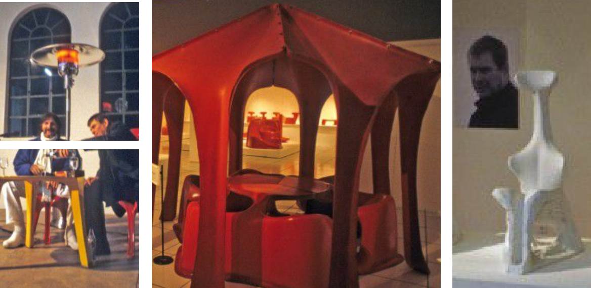
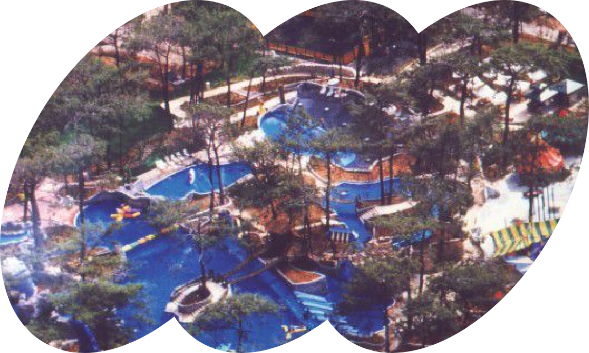
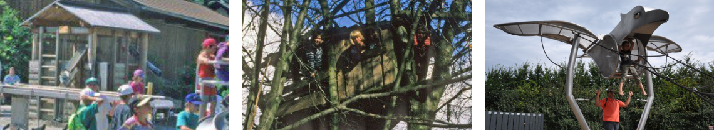

introduce
product
tribute
theory
산업 디자이너를 거쳐 놀이터 디자이너로 활동하고 있는
Günter Beltzig
1968년대 귄터 벨치히를 유명하게 만들어준 작품,

합성 소재를 이용한 가구 디자인 플로리스 의자
새로운 도전

"놀이터 디자이너"

1970년부터 공원 놀이터, 실내 놀이터, 물놀이터, 장애인을 위한 놀이터 등 다양한 분야의 놀이터 프로젝트를 진행하고 제작해가고 있습니다.